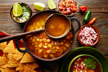
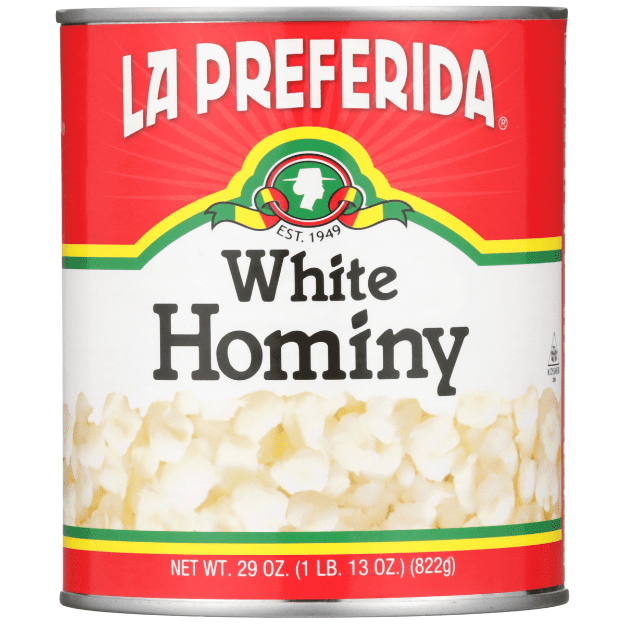
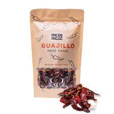

Ingredients
Ingredients needed:
- 1 large can of White Hominy (Maiz Blanco)
- Pork or Chicken
- 4 ounces dried guajillo or ancho chiles
- Salt
- 3 bay leaves
- 8 cloves garlic, 4 cloves roughly chopped, and 4 whole cloves
- 1 teaspoon ground cumin
- 2 tablespoons dry oregano (Mexican oregano if available)
- Water + cooking materials


